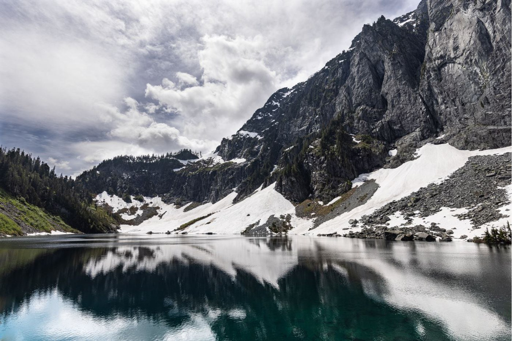

Nature
Ranked #1 in natural beauty, Washington is one of the best states to hike and explore. Keep scrolling to see 3 different places you can experience Washington's famed beauty.
#1 University of Washington's Cherry Blossoms
Located right on the UW campus, visit a flower-filled quad! These Yoshino trees are almost 90 years old and bring thousands of visitors to campus every year! The trees usually are the most beautiful in late March, but blossoms can be seen between February and May. Did you know? Most trees people think are cherry trees are actually plum trees. Thankfully the UW trees are real cherry trees :)
#2 Hike to Lake Serene
Lake Serene is a beautiful mountain hike, so bring all of your friends, family and pets! You may need to practice on some easier hikes beforehand, since a round trip to Lake Serene is sbout 7.2 miles, but it will definitely be worth it. If the weather is nice enough, you can even jump into the lake at the top of the mountain!

#3 Skagit Valley Tulip Festival
Another great activity for a spring day is to visit the beautiful tulips at the Skagit Valley Tulip Festival. The festival takes for all of April and showcases millions of tulips blooming. You can walk, bike or drive along the tulip fields, so there are options for almost everyone! Skagit County produces more tulip and daffodil bulbs than any other county in the country. Support Skagit Valley's impressive agriculture this spring!